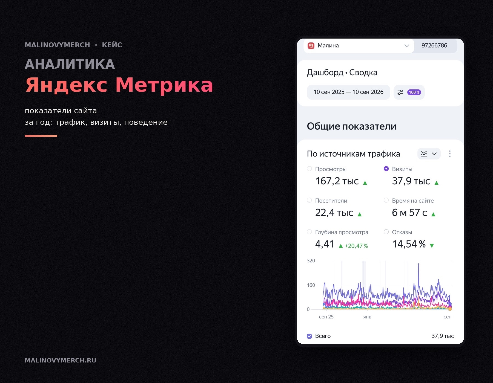
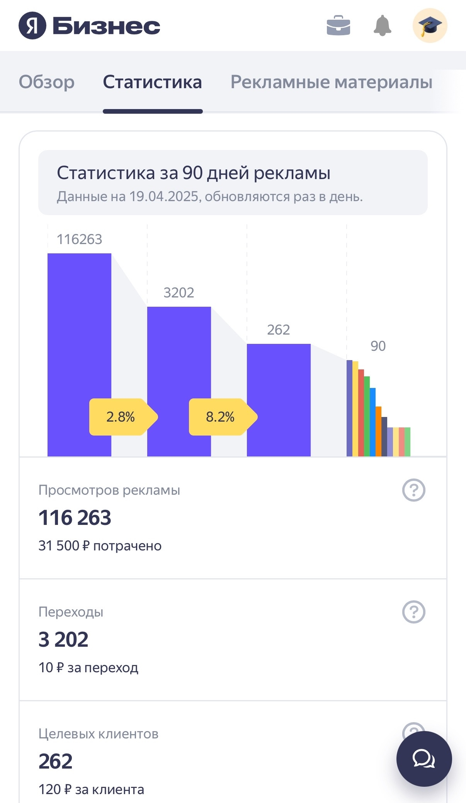
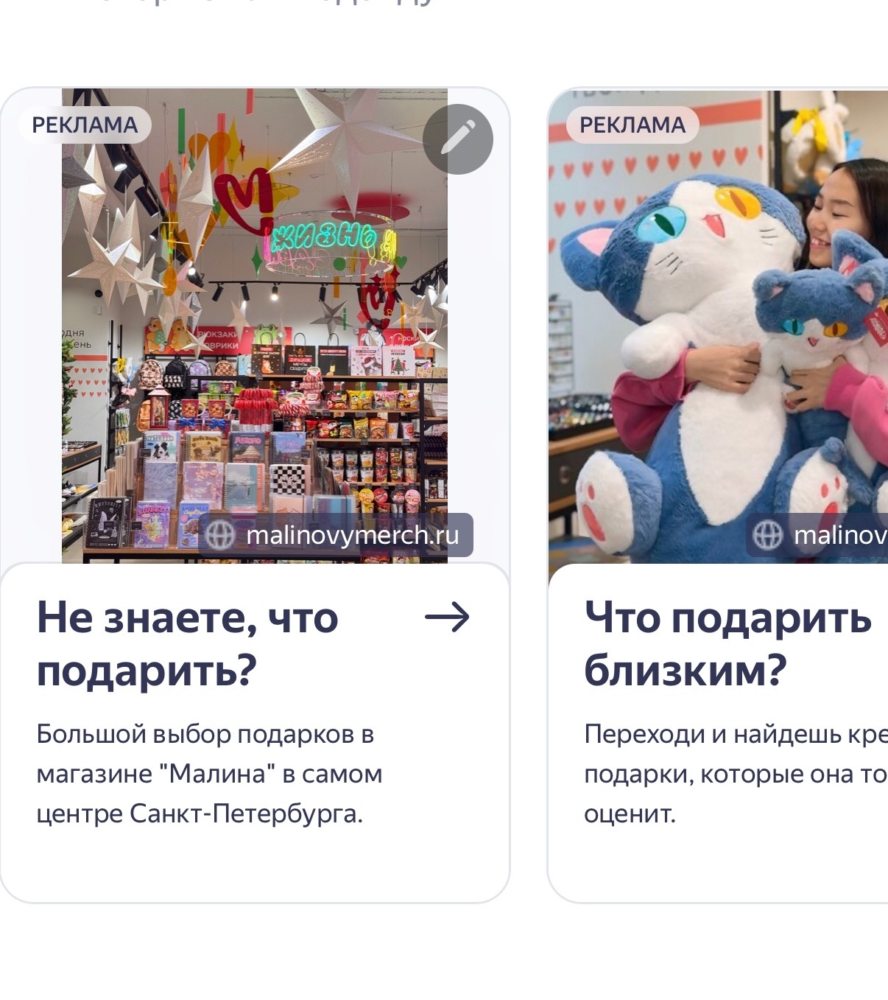

Использовать digital-инструменты не только для присутствия бренда, но и для привлечения трафика и оценки эффективности.
VK Реклама — настраивала таргетированную рекламу сообщества, анализировала результаты кампаний.
Яндекс Директ + Яндекс Карты — настраивала продвижение карточек магазинов, работала с локальным трафиком.
Яндекс Метрика — анализировала источники трафика, отслеживала поведение пользователей на сайте, использовала данные для корректировки продвижения.


